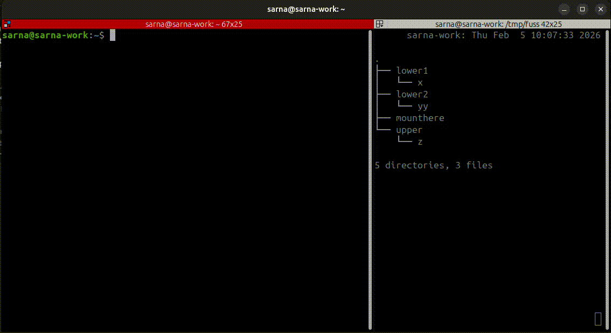

FUSE, the userspace filesystem framework, remains groundbreaking tech to this day. It lets you implement a Linux filesystem without recompiling your kernel, or actually touching it in any way. It does come with a few drawbacks – for example, networked filesystems tend to hang indefinitely on failure, blocking the process in D (a.k.a. uninterruptible sleep induced by I/O) state.
But this time I am not writing this post to warn people against using FUSE for remote systems (which is otherwise my №1 online hobby). Let’s address another issue: mounting.
Problem statement
Mounting a filesystem means attaching it to the UNIX filesystem tree, the one that starts with the / root directory. That's a privileged operation, which kind of breaks the story of allowing mere users to use a filesystem without elevated permissions. The FUSE environment already addresses this issue to some extent with a fusermount helper. It’s a setuid executable – i.e. a bit of cheating, since those effectively run as root and are "to be trusted". Sometimes you also need to add a user_allow_other entry to the /etc/fuse.conf configuration file to make sure that the mounted filesystem is accessible to users.
The problem exacerbates if you try playing with FUSE filesystems within a container, be it via Docker, podman, or any other container manager. Those containers need to be able to access the special /dev/fuse character device used for communicating with the kernel driver. They are also often wrapped in conservative seccomp sandboxes, which tend to kill processes trying to call syscalls that aren't explicitly whitelisted.
Could we perhaps push the filesystem abstraction further up to userland? Indeed!
Pushing the filesystem abstraction further up to userland
File operations qualify as input/output, and those are handled by the kernel through syscalls. At the time of writing, the x86-64 architecture alone has 400-something of them, and roughly 50 are related to filesystem paths. open, mkdir, stat, chmod, link, are likely the most popular among them.
ptrace is one uniquely useful syscall that’s not directly related to filesystems at all. It lets a master process (tracer) attach to its child processes (tracees). It’s most commonly used for interactive debugging with gdb, strace, and myriad other tools. Here comes the interesting part – ptrace allows the tracer to not only peek at the tracees' data, but also poke at it.
That realization (that syscalls can be intercepted and handled in userspace) is the cornerstone for projects like Meta's reverie and Turso's agentfs – and I'm pretty sure it originally powered Google's gVisor (which now switched to seccomp-based systrap). Intercepting syscalls allows you to control how applications communicate with the kernel, creating a userspace-controlled isolation layer.
Let's leverage this powerful feature to fool processes into thinking that they mounted a filesystem at a given directory path!
Fooling processes into thinking that they mounted a filesystem at a given directory path

(Apologies for the overly long and entirely redundant headlines; I have a tendency to milk a joke until nobody but me finds it funny anymore.) With that out of my system: the idea is to intercept system calls as follows:
- if in any way related to filesystem paths, intercept and run our custom handlers;
- if not, forward them to the kernel without any modifications.
For example, when the application issues an openat system call, it is intercepted and handled by a userspace driver. When it issues a getpid, that's of no interest to the filesystem, so the syscall is transiently passed to the kernel.
fuss
Based on the principles above, I hereby present fuss, a no-FUSE filesystem compatible with fuse-overlayfs as well as OverlayFS (which you can find in the Linux kernel).
OverlayFS is a union filesystem based on the notion of layers. Each layer represents the filesystem state, and upper layers are treated as "newer." That makes individual layers immutable and composable, as you can always create a new version by stacking a new layer on top of the existing ones. Nice traits, and this is one of the reasons OverlayFS was picked by Docker (and OCI in general) as the go-to way of representing state in container images. I described the format in more detail here.
While frameworks for intercepting syscalls already exist (e.g., Reverie mentioned above), they often take the holistic approach of intercepting all syscalls. I decided to reduce the scope strictly to filesystem-related ones, which makes the list more maintainable.
The repository is structured as follows:
pkg/traceris the ptrace engine for intercepting syscallspkg/vfsis the minimal abstraction of what a filesystem implementation needs to have to be able to work withpkg/tracerpkg/overlayis the overlayfs-compatible implementation ofpkg/vfspkg/passthroughis a naive do-nothing implementation ofpkg/vfs, and also a decent starting point for implementing new filesystems based onpkg/tracer
demo
fuss lets you fool a single process into thinking it sees a mounted filesystem where there isn't one. That single process can be a shell though! Which allows for comprehensive demos on how it works. In this beautiful half-baked video transmogrified into GIF you can observe both fuss in action, and the underlying directory structure of the individual layers. Files can be created, edited, deleted, and everything is neatly represented in the top writable layer.
For a more practical demo, you're welcome to try the test-image-pull script which grabs an OCI image from Docker registry, unpacks it, and lets you "chroot" inside it with fuss. Still no mounting involved!
But why
Sandboxing a sandbox. Everybody sandboxes everything nowadays, because otherwise rogue AI agents are going to obliterate your system and everything in it. There are countless articles on different layers of isolation, spanning from "somebody else's machine in the cloud" through virtual machines to ultra-lightweight solutions that just intercept system calls. The thing is, there are legitimate cases where you end up trying to run a sandbox within a sandbox. The immense pain of trying to reliably mount overlayfs while inside a container, while also not giving it elevated privileges, is what directly inspired me to implement fuss. It was also really fun.
Contributions welcome!
https://github.com/psarna/fuss, you know the drill.